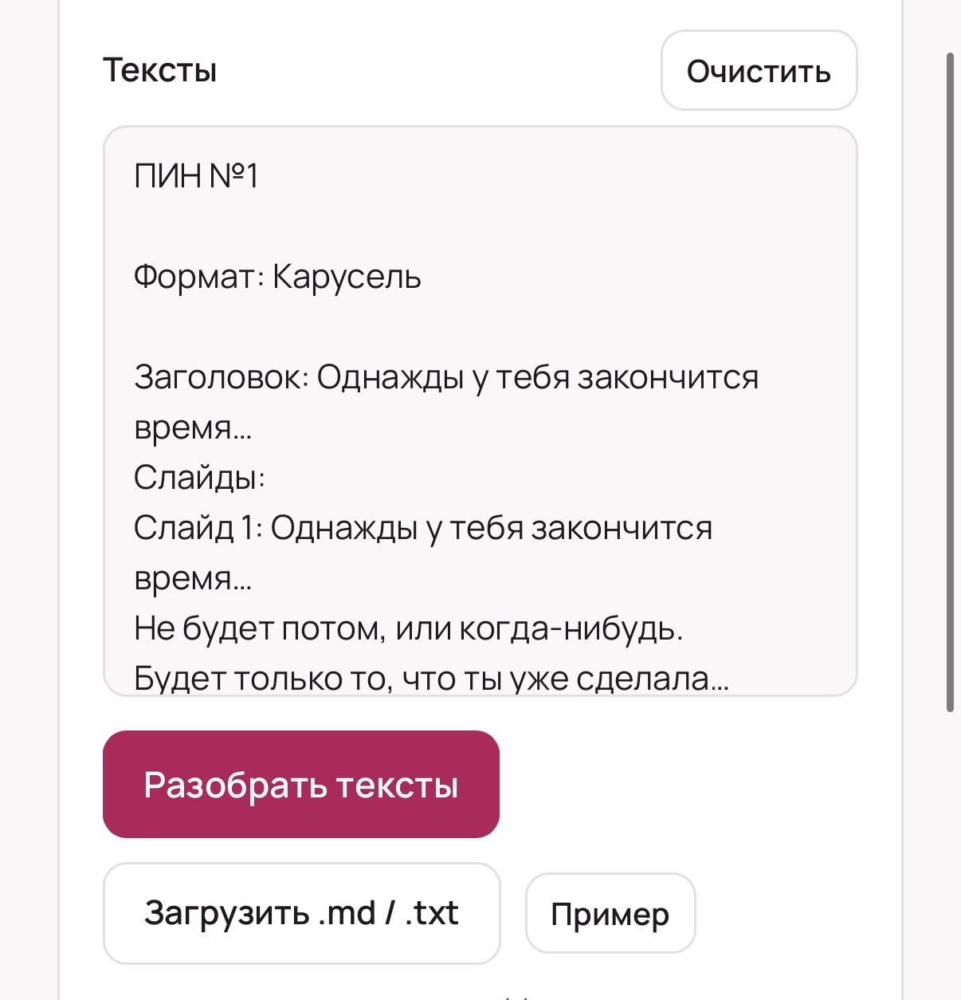
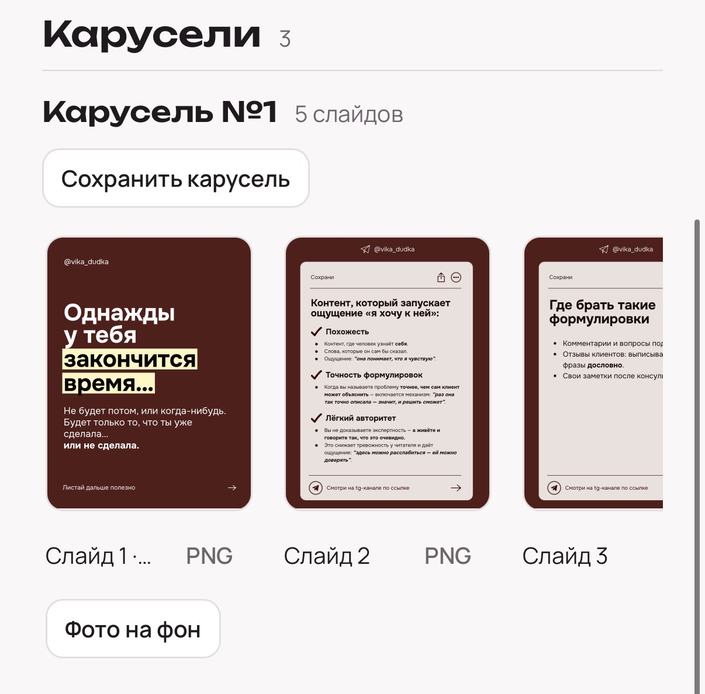
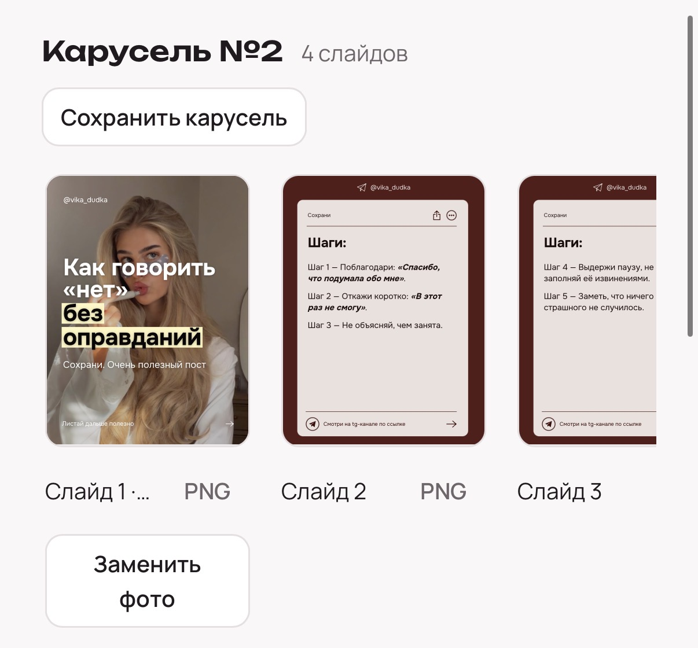
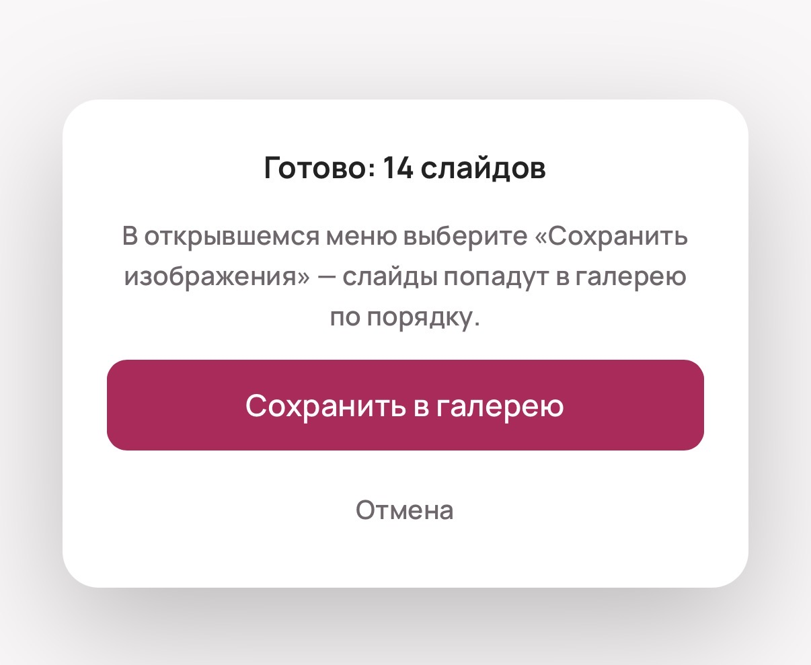

@womans_bloging
Свой AI-агент для вашего блога
Заказать своего AI-агента можно по ссылке ниже
Заказать AI-агентаПример агента «Верстальщик»
Данный агент работает БЕЗ впн и подписок на нейросети 🤌🏻
- Мы 1 раз загружаем ваш дизайн пинов в любых вариантах
- Далее вы будете просто выставлять нужный текст (можно сразу пачкой для 5–10 пинов)
- Агент сам верстает пины по вашему тексту
Вот, как это выглядит 👇🏻




Агента можно сделать и для других задач, под ваш запрос